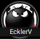

×
Привет!
Если тебе нравится пользоваться веб версией чартов, ты можешь
поблагодарить меня за её создание.
Мой никнейм в румах PS и 888: EcklerV

Спасибо!
P.S. Каждый доллара доната увеличивает винрейт на 1bb/100 (disclaimer:
это может быть неправдой) :D